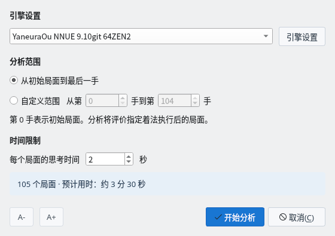
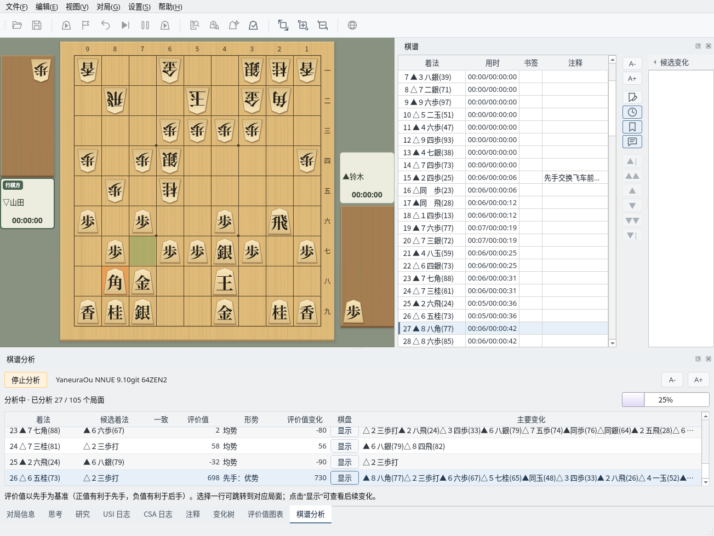
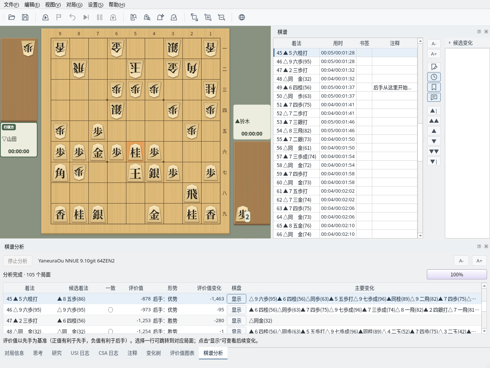
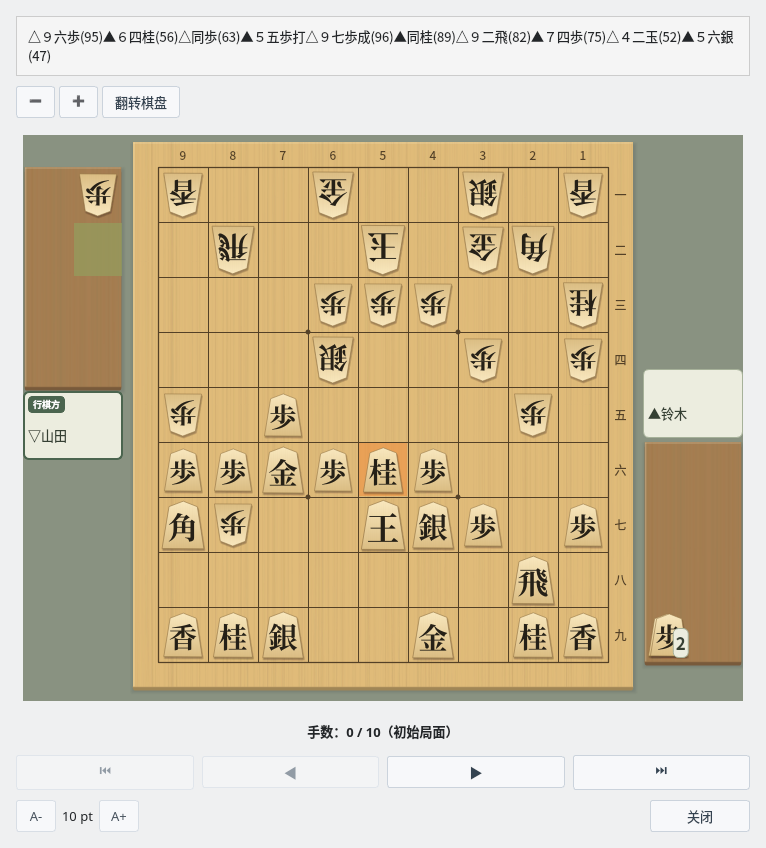
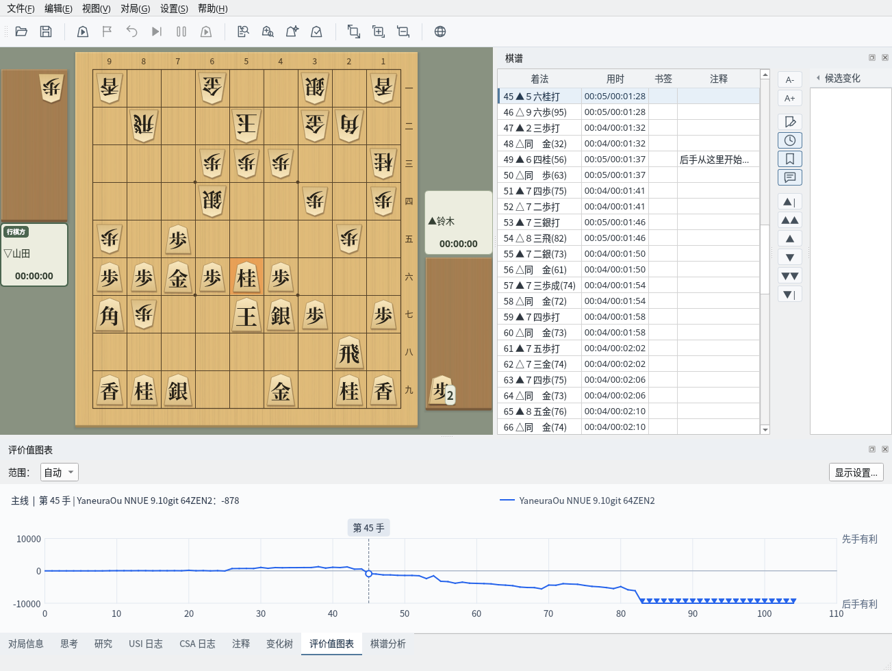

用 USI 引擎分析棋谱，掌握形势的变化
截图在 Linux 上以简体中文界面拍摄。
在“棋谱分析”对话框中设置分析条件
显示要分析的棋谱。可以在对局结束后直接分析，也可以分析通过“文件”→“打开…”读取的棋谱（棋谱管理）。显示变化时，会分析正在显示的变化。
选择“对局”→“分析棋谱…”（也可以使用工具栏按钮）打开“棋谱分析”对话框，设置以下项目。
对话框下方会显示要分析的局面数和预计用时。点击“开始分析”即开始分析。设置会在下次恢复。认输等终局行不会被分析。

“棋谱分析”对话框：设置引擎、分析范围和思考时间
以列表查看已分析局面的评价值、候选着法和主要变化
开始分析后，下方会打开“棋谱分析”面板，每分析完一个局面就增加一行结果。棋盘和棋谱栏会移动到正在分析的局面，评价值图表也会依次绘制。可以通过进度条和已分析的局面数了解进度。
要中途停止，请点击“停止分析”（也可以选择“对局”→“取消分析”）。已有的结果会保留。分析中无法操作棋谱栏和棋盘。

分析中：棋盘移动到正在分析的局面，结果逐行增加
分析结束后会显示“分析完成”。各列的内容如下。
| 列 | 内容 |
|---|---|
| 着法 | 棋谱中的着法。分析走完这一手后的局面 |
| 候选着法 | 引擎在前一个局面认为最好的着法 |
| 一致 | 着法与候选着法相同时显示 ◯ |
| 评价值 | 先手视角的评价值（＋为先手有利，−为后手有利）。将死显示为“mate 手数” |
| 形势 | 根据评价值判定的形势（参见下方的“形势判断的标准”） |
| 评价值变化 | 与前一个局面相比评价值的增减（先手视角） |
| 棋盘 | 点击“显示”在棋盘上查看主要变化 |
| 主要变化 | 引擎预测的后续着法 |
选择一行后，棋盘、棋谱栏和评价值图表会移动到该局面。评价值变化较大的行就是形势大幅变化的一手（本例中为第 45 手▲５六桂打）。结果会保留到开始下一次分析、读取其他棋谱或开始新对局为止。

分析结果：选择一行即可移动到该局面
点击“棋盘”列中的“显示”（或按 Enter 键）会打开“主要变化显示”窗口，可以从该局面逐手重放主要变化，也可以“翻转棋盘”或放大、缩小棋盘。

主要变化显示：从分析的局面逐手重放主要变化
用图表查看形势的变化
“评价值图表”标签页以先手视角的折线显示分析得到的评价值变化。上方为先手有利，下方为后手有利，将死的局面以标记显示在图表的上端或下端。点击图表即可移动到该手的局面。
范围可以选择“自动”或“固定”，并可通过“显示设置…”更改刻度和字体大小。图表图片可以通过“文件”→“保存评价值图表图片…”保存，或通过“编辑”→“复制评价值图表图片”复制。

评价值图表：上方显示所选着法及其评价值
根据评价值将形势分为 5 个等级
| 评价值 | 形势 | 显示示例 |
|---|---|---|
| 0 ～ 100 | 均势 | 均势 |
| 101 ～ 300 | 稍有利 | 先手：稍有利 / 后手：稍有利 |
| 301 ～ 600 | 有利 | 先手：有利 / 后手：有利 |
| 601 ～ 1000 | 优势 | 先手：优势 / 后手：优势 |
| 1001 以上 | 胜势 | 先手：胜势 / 后手：胜势 |
| 将死 | 胜 | 先手胜 / 后手胜 |